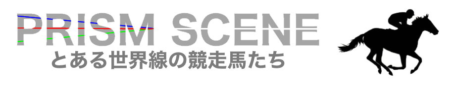
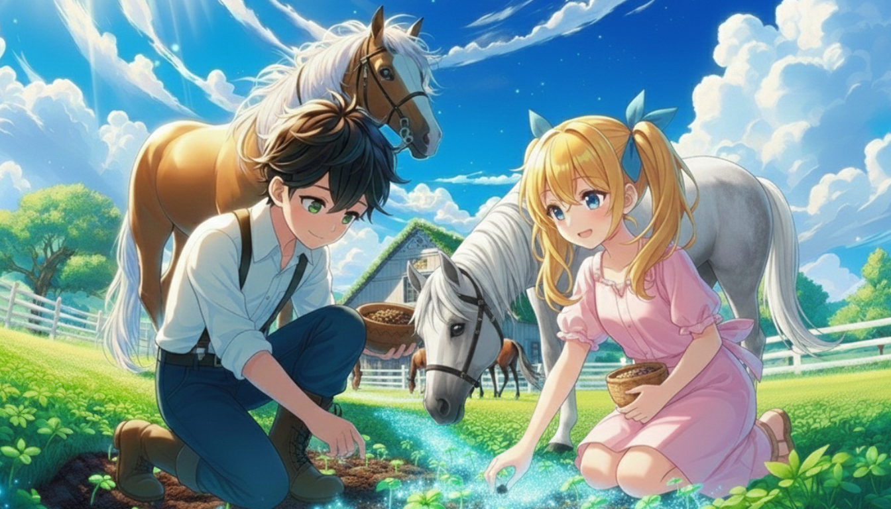
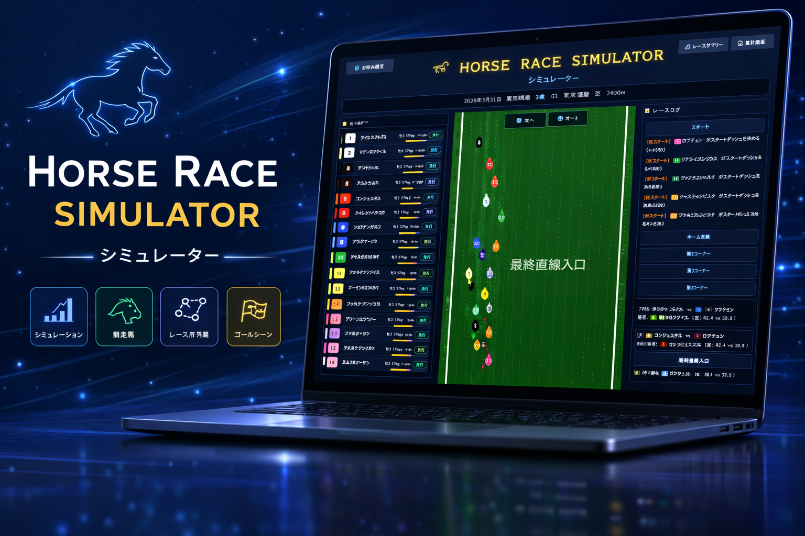

Horse racing applications
競馬に
新しい景色を。
データを読み、ひらめきを楽しみ、レースを見届ける。
それぞれの入口から、競馬の面白さを広げる3つのアプリです。
Choose your experience
今日は、どう楽しむ？
気になるカードから、それぞれのアプリへ。すべてブラウザから楽しめます。
01
ANALYZE & DISCOVER

Data × Story
PRISM_SCENE
定量分析レポートから、とある世界線の物語、レース後のアフターストーリーまで。データと物語で競馬の景色を映し出します。
02
PLANT AN IDEA

Inspiration × Prediction
予想の種を蒔いて
簡単お馬選び
好きな言葉を「予想の種」に。レース条件とひらめきから、自分だけのお馬選びを楽しめる予想アプリです。
03
WATCH THE RACE

Race × Simulation
Horse Race
Simulator
能力・脚質・コース条件からレースを再現。設定からゴール、複数走の集計まで、展開を見届けるシミュレーターです。
About these projects
競馬を
もっと楽しく
ドラマチックに。
数字を深く読む楽しさも、偶然のひらめきも、レースを眺める高揚感も。ひとつの正解に絞らず、競馬との新しい付き合い方を形にしています。
Disclaimer: This website is for entertainment purposes only. It does not provide financial or betting advice. Users are responsible for their own decisions.
免責事項：本サイトはエンターテインメントを目的としており、金融または勝馬投票（賭博）に関する助言を提供するものではありません。利用者は自己の責任において本サイトを利用するものとします。